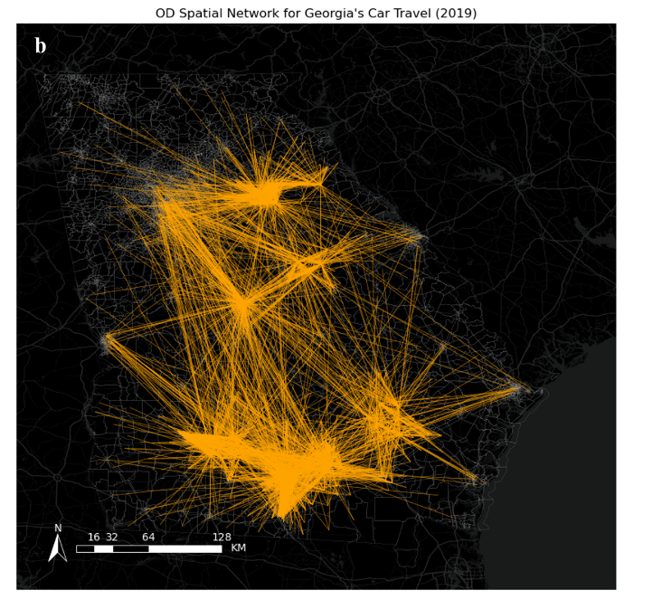
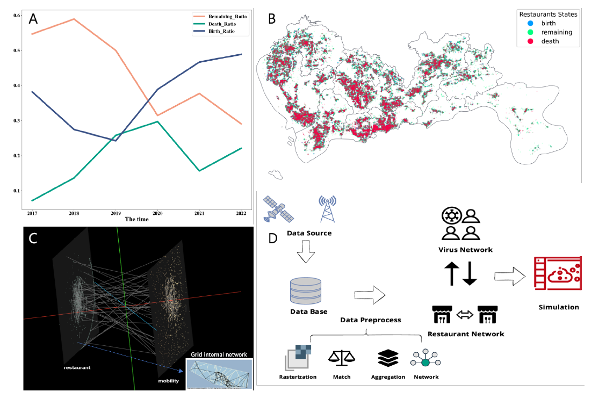
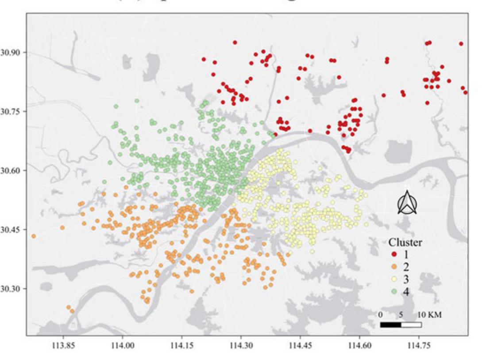
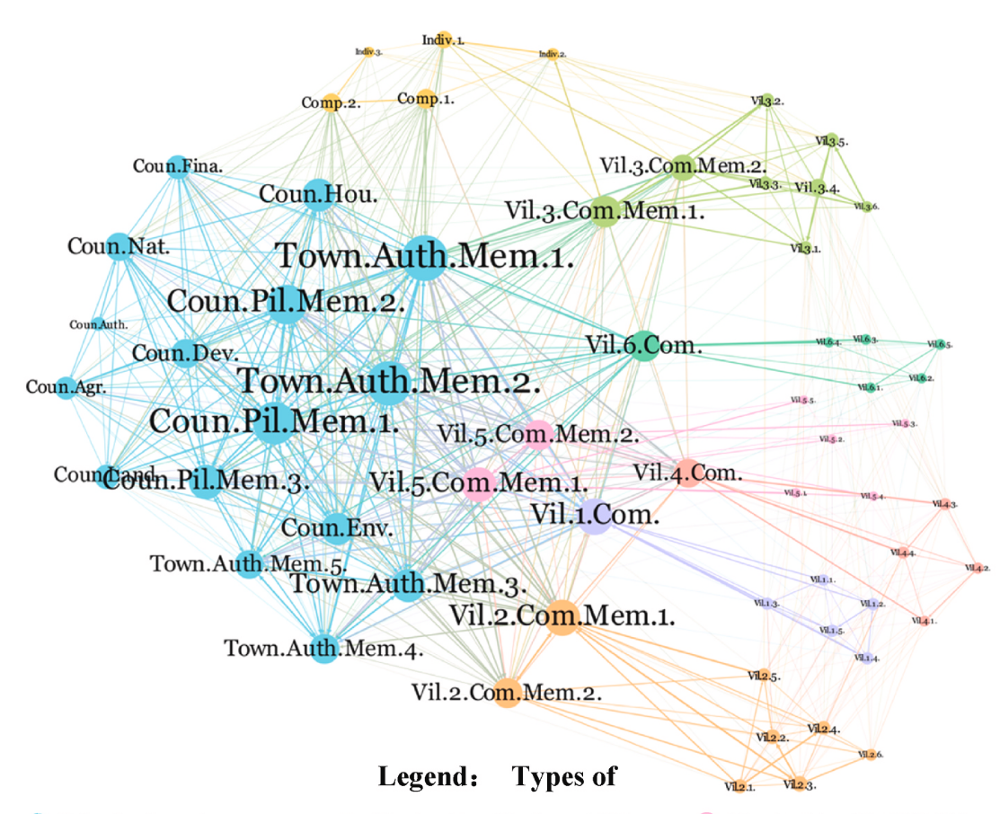
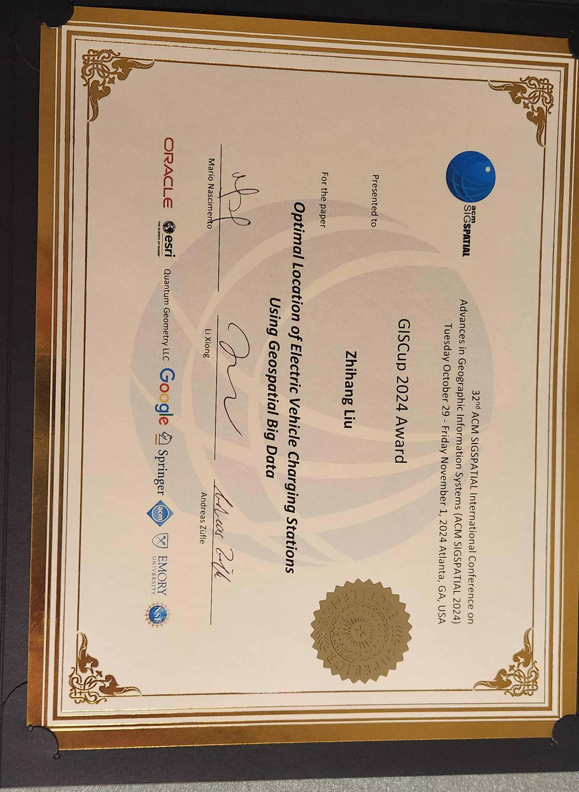

Biography
I am currently a PhD student at the Institute of Space and Earth Information Science (ISEIS), The Chinese University of Hong Kong, supervised by Prof. Mei-Po Kwan. I received my M.Sc. from Peking University and my Bachelor's degree from Sun Yat-sen University.
My research interests include Complex Systems Dynamics, Physics-Informed Spatial Intelligence, and Swarm Intelligence. I also co-founded Evolution Tech Co., Ltd. to develop and build swarm robotic systems for validating and translating our research into real-world applications.
Education
- MSc, Peking University, 2021-2024
- Bachelor, Sun Yat-Sen University, 2017-2021
- Guest Researcher, Department of Aerospace and Geodesy, Technical University of Munich, 2022-2023.
- UK Study Abroad Programme (Full Scholarship), LSE, Cambridge, Oxford, UoM, 2019.
- China Scholarship Council (CSC) Excellent Undergraduate International Exchange Program, The University of Seoul, 2019-2020.
Skills
Skills network failed to load. Please refresh or check your network.
Work Experience
Full -time Research Assistant / The Chinese University of Hong Kong
Participation in Project: “Vehicle Detection and Vehicle-kilometrage Estimation Based on Remote Sensing Technologies”, Smart Traffic Fund, The Government of Hong Kong SAR, No. PSRI/44/2208/PR, 2023 – 2025. (PI: Prof. Mei-Po Kwan)
Research Direction: Deep Learning of Remote Sensing and Modeling of Complex Transportation Systems
Supervisor: Prof. Mei-Po Kwan
Summer Intern / The JTL Urban Mobility Lab at MIT
Research Direction: Mobility AI with urban imagery, networks, and natural language
Full -time Research Assistant / Technical University of Munich
Participation in Project: “Towards a NAS Benchmark for Classification in Earth Observation”, Sponsored by: TUM Data Science in Earth Observation cooperating with the German Aerospace Center (DLR), 2022-2023
Research Direction: Complexity & Complex Networks, Auto ML
Output papers: Efficiency and equity of the multimodal travel between public transit and bike-sharing accounting for multiscale, Spatio-temporal Analysis of Urban Economic Resilience during Covid-19 with Multilayer Complex Networks
Supervisor: Prof. Dr. Martin Werner
Part- time Research Assistant/IGSNRR, Chinese Academy of
Sciences
Participation in Project: “Cooperative Observation, Transformation Mechanism and Scenario Simulation of Rural Areal System”, Major Program of the National Natural Science Foundation of China, No. 42293270, 2023 – 2027. (PI: Prof. Liu Yansui)
Research Direction: Regional complex systems simulation & Multi-Agent Reinforcement Learning
Output paper: Exploring Patterns of Rural Development through Collective Behavior-Based AI Simulation
Supervisor: Prof. Yurui Li


Research
*


Evolution Tech develops open-source, cost-effective quadruped robots with dynamic motion control, hardware-software integration, and vision-based perception for swarm applications.
Building an open wearable eye-tracking system to study spatial attention during real-world mobility, map gaze into 3D/semantic space, and evaluate human–machine attention alignment.
We detected the different types of multi-modal
travel OD networks in Shenzhen, China.
We illustrate the Covid Fatigue during the
Covid-19 between Wuhan and Shanghai.
We visualized the taxi tracks and buildings in
shenzhen using the deck.gl.
We visualized the taxi tracks and air pollution
distribution in Jinan
Publications
Efficiency and equality of the multimodal travel between public transit and bike-sharing accounting for multiscale. Sustainable Cities and Society 101, 105096.
Shifting sentiments: analyzing public reaction to COVID-19 containment policies in Wuhan and Shanghai through Weibo data. Humanities and Social Sciences Communications 11(1), 1–13.

Optimal Location of Electric Vehicle Charging Stations Using Geospatial Big Data. Proceedings of the 32nd ACM International Conference on Advances in Geographic Information Systems (ACM SIGSPATIAL).

Spatio-Temporal Analysis of Urban Economic Resilience during COVID-19 with Multilayer Complex Networks. The International Archives of the Photogrammetry, Remote Sensing and Spatial Information Sciences.

Fast optimization for large scale logistics in complex urban systems using the hybrid sparrow search algorithm. International Journal of Geographical Information Science 37(6), 1420–1448.

Collective action dilemmas of sustainable natural resource management: A case study on land marketization in rural China. Journal of Cleaner Production 439, 140872.
News
Second Prize, ACM SIGSPATIAL GIS Cup 2024
I won the Second Prize in the ACM SIGSPATIAL GIS Cup 2024 (see contest & submission). The paper Optimal Location of Electric Vehicle Charging Stations Using Geospatial Big Data was presented at the 32nd ACM SIGSPATIAL (Oct 29 – Nov 1, 2024, Atlanta, GA, USA).

Awarded ISPRS Foundation's Travel Grant — ISPRS Geospatial Week 2023
I was awarded the ISPRS Foundation Travel Grant and attended the ISPRS Geospatial Week 2023 (2–7 September, Cairo, Egypt). I gave an oral presentation: Spatio-Temporal Analysis of Urban Economic Resilience During COVID-19 with Multilayer Complex Networks.